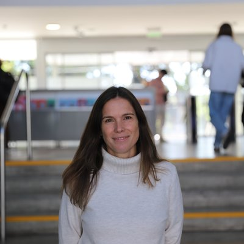
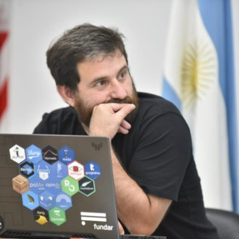

Red de la Diáspora 2026
Agustina Brizio
The Datasphere Initiative
Buenos Aires, Argentina
Gobernanza
Gobernanza
The Datasphere Initiative
Buenos Aires, Argentina
Gobernanza
UTDT y CONICET
Buenos Aires, Argentina
Procesamiento del lenguaje natural y del habla
Universidad Nacional del Sur y CONICET
Bahía Blanca, Argentina
Inteligencia artificial, procesamiento de imágenes
CONICET, UBA e ITBA
Buenos Aires, Argentina
Deep learning
CINVE (Uruguay); investigador afiliado a Analytica y CIPPEC
Buenos Aires, Argentina
Políticas públicas (diseño de instrumentos, evaluación)

Universidad Torcuato Di Tella
Buenos Aires, Argentina
Educación, políticas públicas, evaluación de impacto

Google DeepMind
Estados Unidos
Procesamiento de habla y audio, aprendizaje profundo, LLMs
Instituto de Ciencias de la Computación, CONICET-UBA
Buenos Aires, Argentina
Procesamiento del habla y del lenguaje natural
Banco Mundial
Washington DC, Estados Unidos
Educación
CAF – Banco de Desarrollo de América Latina y el Caribe
Buenos Aires, Argentina
Gobernanza, infraestructura pública digital (DPI)
UNLP y UAI
La Plata, Argentina
IA y computación cuántica
Open Knowledge Foundation
Ámsterdam, Países Bajos
Gobierno electrónico y data commons
Weill Cornell Medicine
Nueva York, Estados Unidos
Imágenes médicas, IA generativa
Departamento de Computación, Exactas-UBA y CONICET
Argentina
Simulación, algoritmos, IA, datos
Global Data Barometer
Argentina
Gobernanza de datos
UCL IOE
Londres, Reino Unido
IA y educación